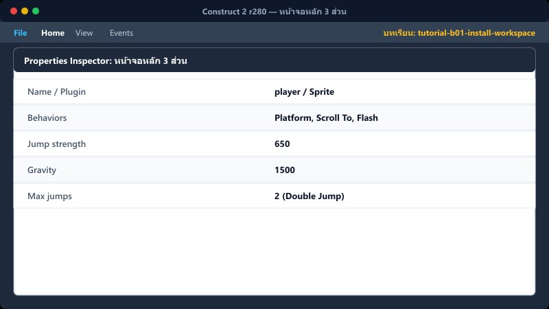
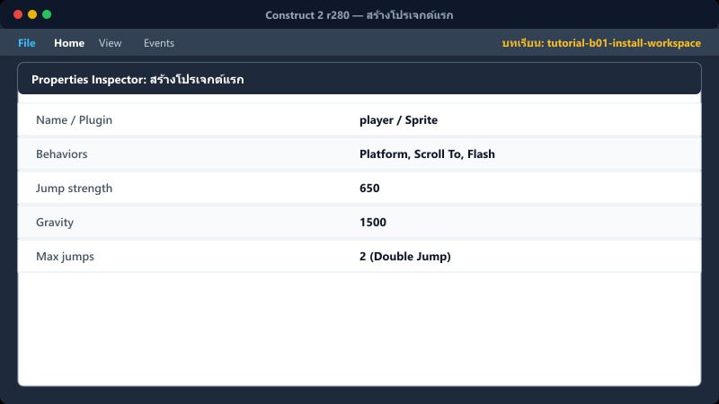
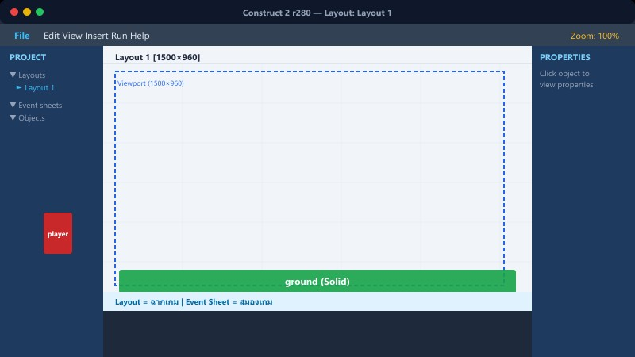
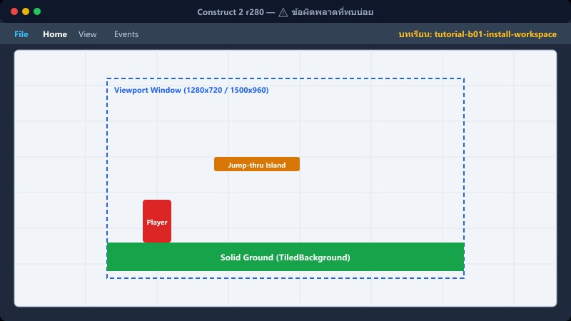

1 ดาวน์โหลดและติดตั้ง
1. ไปที่เว็บไซต์ Scirra.com เพื่อดาวน์โหลด Construct 2 r280 (Free Edition)
2. เมื่อดาวน์โหลดเสร็จ ดับเบิลคลิกไฟล์ติดตั้ง .exe
3. คลิกปุ่ม Next ไปเรื่อยๆ จนถึงหน้าเลือกประเภทติดตั้ง เลือก Typical
4. คลิก Next และ Finish เพื่อเสร็จสิ้น
📍 ที่ไหนใน C2: Windows → ไฟล์ติดตั้ง .exe
2 หน้าจอหลัก 3 ส่วน

เมื่อเปิดโปรแกรม จะเจอหน้าต่างหลัก แบ่งเป็น 3 ส่วนสำคัญ:
1. ซ้าย: Project bar แถบจัดการไฟล์ในโปรเจกต์ (เช่น object, layout, event sheet)
2. กลาง: Layout view พื้นที่ทำงานหลัก (วาดฉาก วางวัตถุ)
3. ขวา: Properties แถบปรับค่าต่างๆ ของ object (เช่น ขนาด, ตำแหน่ง, สี)
📍 ที่ไหนใน C2: หลังเปิดโปรแกรม Construct 2 จะเห็นทันที
3 สร้างโปรเจกต์แรก

1. คลิกที่เมนู File ด้านบนซ้าย
2. เลือก New
3. เลือก Empty project แล้วคลิก Open
4. ที่หน้าต่าง Properties ด้านขวา ตั้งชื่อโปรเจกต์ตรงช่อง Name
5. ตั้งค่า Window size เป็น 1280, 720 หรือ 1500, 960
| Project Properties |
|---|
| Name | MyFirstGame |
| Window Size | 1280, 720 |
6. กด Ctrl + S หรือเลือก File → Save as single file เพื่อบันทึกงานเป็นไฟล์ .capx
7. เวลาต้องการทดสอบเกม ให้กดปุ่มคีย์บอร์ด F5 เพื่อ Preview ในบราวเซอร์
📍 ที่ไหนใน C2: เมนู File → New
4 รู้จัก Layout กับ Event Sheet

1. Layout คือ ฉากเกม (สำหรับวาดฉาก วางตัวละคร)
2. Event Sheet คือ สมองของเกม (สำหรับสั่งงานและใส่เงื่อนไข/โค้ด)
ทุก Layout จะมี Event Sheet คู่กันเสมอ เพื่อให้ทำงานสอดคล้องกัน โดยสามารถเช็คได้ที่ Properties ของ Layout ว่าผูกกับ Event Sheet ใดอยู่
📍 ที่ไหนใน C2: แถบ Project bar (ซ้าย) → โฟลเดอร์ Layouts / Event sheets
⚠️ ข้อผิดพลาดที่พบบ่อย

- ติดตั้ง C2 ไม่สำเร็จ: ให้ลองคลิกขวาที่ไฟล์ติดตั้งแล้วรันแบบ Run as administrator
- เปิดไฟล์ .capx แล้ว C2 ไม่ขึ้น: ตรวจสอบเวอร์ชันของ Construct 2 ว่าตรงกันหรือไม่
- กด F5 แล้วจอดำ: เพราะยังไม่มี object ใน Layout ลองใส่ Sprite สักตัวก่อน
- ลืม Save as: งานอาจหายเมื่อไฟดับ หมั่นเซฟงานเรื่อยๆ